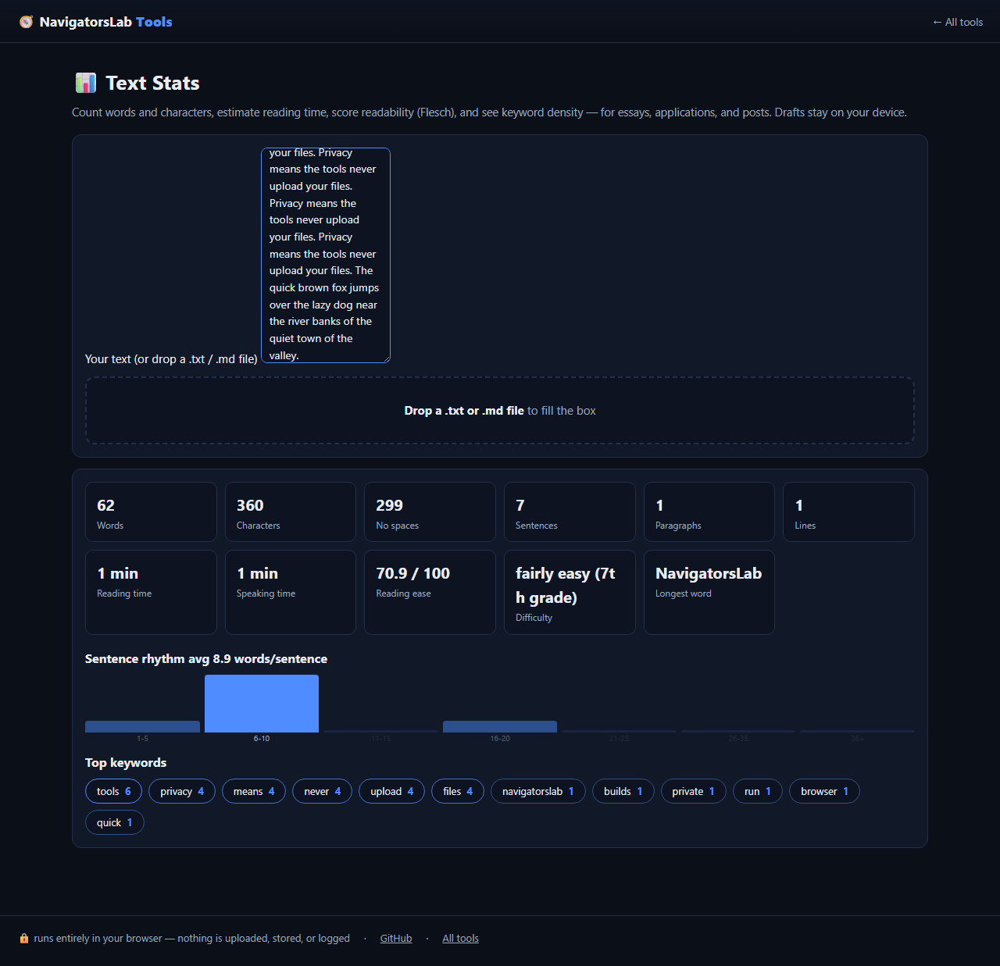

Text Stats
Words, reading time, readability, keyword density
🆓 free & open source (MIT)🔒 nothing is uploaded📶 works offline📱 mobile friendly

Text Stats mid-task — this demo runs entirely on this page's own GitHub Pages site.
What it does
- Words, characters, sentences, reading and speaking time
- Flesch reading-ease with grade level, plus keyword density
- Live sentence-rhythm histogram
How it works
- Step 1. Paste the text
- Step 2. Get words, Flesch grade and keyword density
- Step 3. Watch the sentence-rhythm histogram
Private by design. Files are processed on your device and never
sent to any server. No accounts, no tracking, no cookies, nothing retained. Prefer the hub?
The same tool lives at https://navigatorslab.com/tools/textstats.html.
The suite: 16 tools, one zero-upload promise
🛡 Photo Privacy KitStrip GPS, camera model and timestamps before posting
🔍 Metadata & Hidden-Data CheckerSee what's really inside a file — then strip it
🗜 Image ShrinkerHit “max 2 MB” portal limits without TinyPNG
📄 Scan & Screenshot CleanerPhone photos of documents → clean, straight PDFs
✍ Local E-Sign PadSign this lease tonight — not DocuSign
🧾 Receipts → One PDFShoebox of receipt photos → one date-sorted PDF
🔢 Receipt OCR → CSVRead totals off receipt photos, export for expenses
🔳 QR StudioGenerate QR codes and decode QR images — no site sees them
🎧 Audio TrimmerCut voice notes and clips on a waveform
🧮 Invoice / Quote GeneratorOne-person shops: hours in, clean PDF out
🗂 Batch Rename & SortIMG_5847.jpg → 2026-09-05-receipt-home-depot.jpg
🖨 Print-Shop PrepExact sizes, bleed, DPI checks, print-ready PDF
📑 PDF PagesReorder, rotate, delete and extract PDF pages
🔬 Text DiffCompare two texts with word-level highlights
🎨 ReimagineRedesign any HTML page from its own content